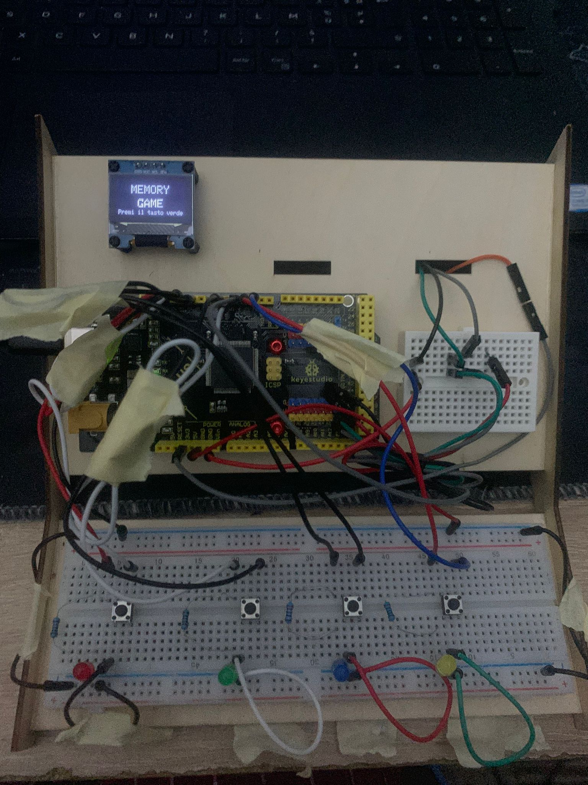

📌 Cos'è un memory game
Il Memory Game è un gioco di memoria che sfida i riflessi e la concentrazione dei giocatori. Una sequenza di colori viene mostrata tramite LED luminosi: il giocatore deve memorizzarla e ripeterla nello stesso ordine. Ad ogni turno, la sequenza diventa più lunga e complessa, mettendo alla prova la capacità di ricordare rapidamente. È un'attività divertente e stimolante, ideale per allenare la mente in modo semplice e interattivo.
🧰 Componenti Necessari
- 4x LED
- 4x Pulsanti
- 1x Buzzer
- Arduino Uno
- Breadboard e jumper
- Schermo Oled
💡 Esempio di Codice
#define SCREEN_WIDTH 128
#include <Wire.h>
#include <Adafruit_GFX.h>
#include <Adafruit_SSD1306.h>
#define SCREEN_WIDTH 128
#define SCREEN_HEIGHT 64
#define OLED_ADDR 0x3C
Adafruit_SSD1306 display(SCREEN_WIDTH, SCREEN_HEIGHT, &Wire, -1);
#define MAX_ROUNDS 10
#define ENTRY_TIME_LIMIT 4000
#define RED 0
#define GREEN 1
#define BLUE 2
#define YELLOW 3
const byte ledPins[] = {10, 3, 13, 5};
const byte buttonPins[] = {9, 2, 12, 6};
const int tones[] = {294, 370, 440, 523};
#define BUZZER_PIN 4
byte sequence[MAX_ROUNDS];
byte currentRound = 0;
int score = 0;
bool isButtonPressed(byte pin) {
if (digitalRead(pin) == LOW) {
delay(50);
return digitalRead(pin) == LOW;
}
return false;
}